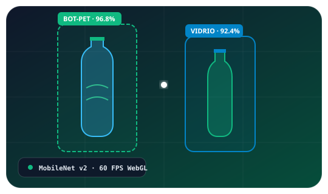

Inteligencia Artificial & Sustentabilidad
Visión Artificial para Clasificación de Envases
Detecta botellas desde tu cámara o una fotografía, con seguimiento para evitar conteos repetidos. El material y el impacto ecológico se muestran como estimaciones.
Estudiante: Brayan Joel Ramos Vargas
Docente: Ing. Jesús Bautista
Detección: Botellas

Envases Clasificados
0
● Conteo único sin duplicados
Plástico Recuperado
0g
Estimado en resina PET (~24.5g / botella)
Huella CO₂ Mitigada
0g
Reducción de emisiones de carbono (~82g / botella)
Agua Preservada
0.0L
Ahorro hídrico en manufactura (~3.2L / envase)
Reembolso DRS / Retorno
0.00 Bs.
Valor de retorno (~0.50 Bs PET / ~1.00 Bs Vidrio)
Índice Circular HQR
74.5%
Grado Alimentario FDA · Orynycz et al. (2026)
Visor Bio-Óptico
Cargando IA
Sensor Óptico en Reposo
Activa la cámara en vivo o arrastra una fotografía para iniciar la clasificación con IA.
Preparando modelos de inferencia neuronal...
Control Diario de Inventario y Ventas (Planilla con Foto)
Fija con cuántas botellas empiezas el día (ej. 10), lee con la cámara cuántas quedan (ej. 8) y guarda el día calculando automáticamente lo vendido (ej. 2 vendidas) junto con la foto de evidencia.
● Auto-IA
3. Cálculo de Ventas
2 vendidas
Quedan 8 de 10
| Foto Evidencia | Día y Hora | Producto | Stock Inicial | Quedan (Leído) | Vendidas (Cálculo) | Estado | Acciones |
|---|---|---|---|---|---|---|---|
| Aún no hay cortes diarios guardados. Ingresa con cuántas botellas empiezas (ej. 10), apunta la cámara o sube una foto para leer cuántas quedan (ej. 8) y pulsa Guardar Día + Foto. | |||||||
Inventario Inteligente de Envases
Registro ordenado cronológicamente con clasificación de material y estimación de huella ecológica.
| ID Objeto | Material Identificado | Tamaño / Volumen | Tapa / Contenido | Reembolso DRS | Certeza de IA | Hora de Detección | Acciones |
|---|---|---|---|---|---|---|---|
| Todavía no hay envases registrados. Activa la cámara para comenzar el conteo. | |||||||
Total de envases únicos en registro: 0
Norma ISO 14040 · Análisis de Ciclo de Vida